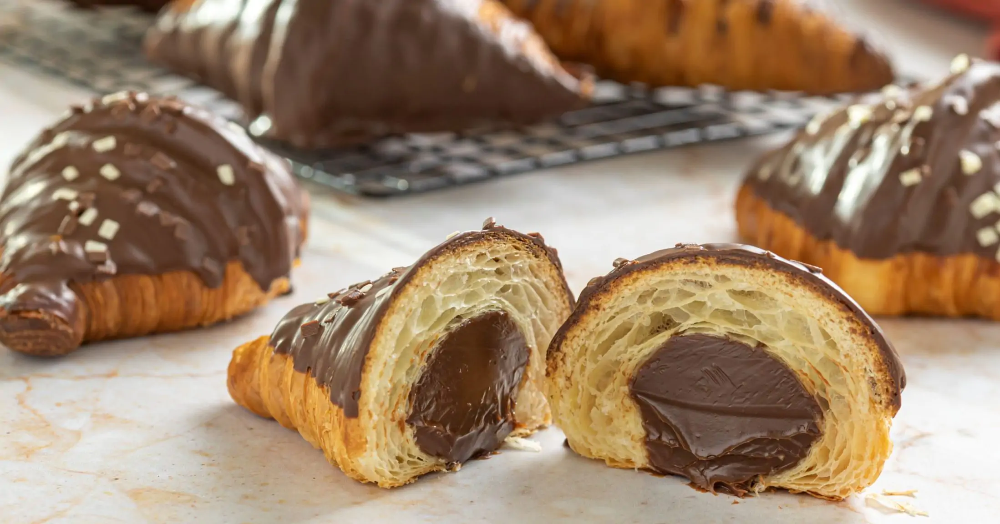
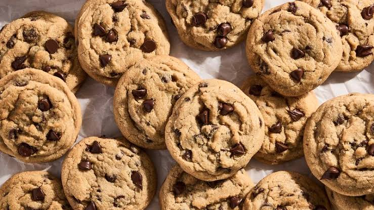
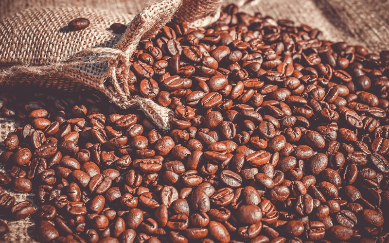
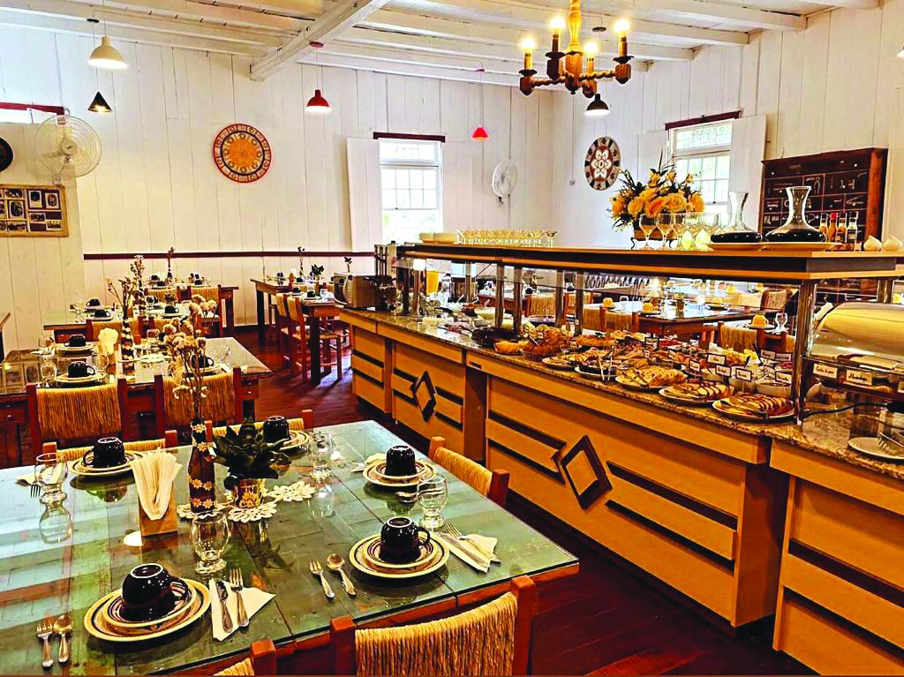

Momentos doces, sabores inesquecíveis
Massa folhada dourada, recheio cremoso de chocolate e uma combinação perfeita para acompanhar seu café. Uma experiência deliciosa em cada pedaço!
Descubra nosso cardápio
Uma doce tentação a cada mordida
Donuts macios, recheio generoso de chocolate e uma delicada camada de açúcar. O acompanhamento perfeito para transformar sua pausa em um momento especial.
Conheça nossas delícias
O carinho de uma receita caseira
Cookies douradinhos, textura irresistível e pedaços de chocolate em cada mordida. O sabor acolhedor que combina com um café fresquinho e bons momentos.
Explore nosso cardápio
Uma história feita de café, carinho e tradição
A Cafeteria da Fazenda nasceu em 1970, na cidade de Mairinque, no interior de São Paulo. Tudo começou com o sonho de criar um lugar onde as pessoas pudessem tomar um bom café e se sentir em casa.
No começo, a cafeteria era pequena e familiar. Os cafés eram preparados de maneira artesanal e os bolos seguiam receitas tradicionais.
Com o passar dos anos, a cafeteria conquistou moradores e visitantes, preservando o sabor caseiro e o acolhimento que fazem parte de sua história.
Hoje, continuamos valorizando nossas raízes, servindo produtos de qualidade e buscando transformar cada visita em uma lembrança especial.
Tradição desde 1970
Receitas, histórias e momentos especiais ao longo das gerações.
Sabores especiais
Cafés e receitas que valorizam o sabor e a tradição.
Feito com carinho
Produtos preparados com dedicação, cuidado e atenção aos detalhes.
Um pedacinho da fazenda em Mairinque
Um espaço confortável, tranquilo e cheio de detalhes que lembram a vida no campo. Aqui, cada momento ganha um sabor especial.

Aconchego
Um ambiente acolhedor para conversar, descansar e aproveitar bons momentos.
Sabores especiais
Cafés, bolos e receitas caseiras preparados com dedicação.

Momentos inesquecíveis
Um lugar para criar memórias e aproveitar uma experiência especial.
O café que atravessa gerações
Venha conhecer nossa história e experimentar os sabores da Cafeteria da Fazenda.
Venha nos conhecerVenha nos visitar na fazenda
Um ambiente acolhedor, café especial e sabor caseiro em Mairinque - SP.
Cafeteria da Fazenda
-
📍
Endereço
Av. Preciosa Purificação Ramos, 1031 - Recanto dos Eucaliptos
Mairinque - SP, 18120-000 -
🕒
Horário
Segunda a domingo
08:00 às 19:00 -
📞
Contato
(11) 99999-9999
-
🚗
Como chegar
Consulte a rota no Google Maps para planejar sua visita.
Seu café favorito está aqui.
Venha relaxar, tomar um café especial e aproveitar o clima acolhedor da Cafeteria da Fazenda.
Fazer pedido